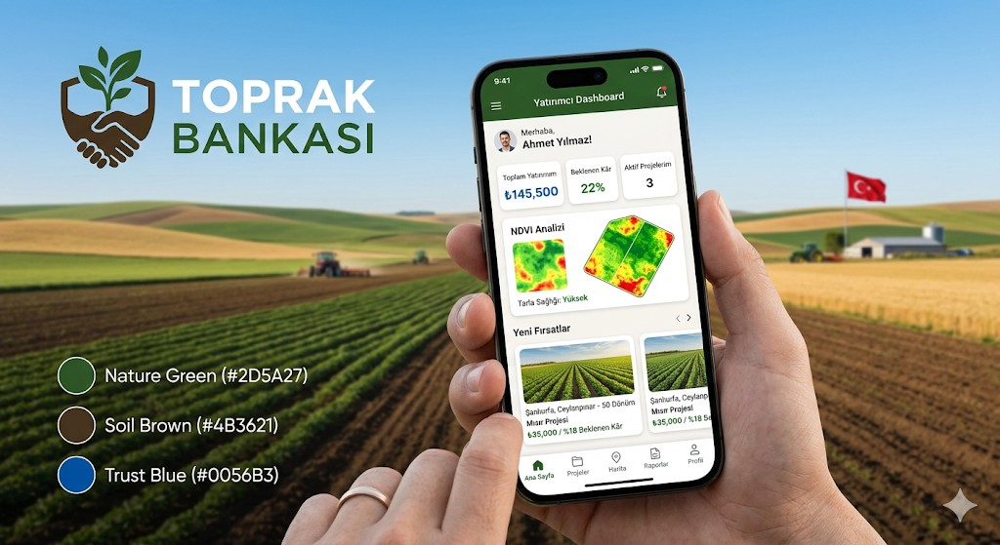

Bir SAP geliştirme ekibinde ABAP geliştirici stajyeri olarak çalıştım.
Docker'ın temellerini öğrendim; versiyon kontrolü, CI/CD ve yayına alma süreçlerini içeren DevOps iş akışını tanıdım.
Docker, Linux ve DevOps süreçleri. Final projesi: Guestbook.
Nginx reverse proxy arkasında Flask ve PostgreSQL, yanında Adminer. systemd servisi olarak çalışıyor; cron logları arşivleyip veritabanının yedeğini alıyor. CI dört container'ı birden ayağa kaldırıp test ediyor.
Container tabanlı bir REST API. GitHub Actions her push'ta testleri çalıştırıyor, Docker ortamını test ediyor ve image'ı GHCR'a gönderiyor.
42'nin Python müfredatı: temeller, OOP, hata yönetimi, dosya işlemleri, soyut sınıflar, sanal ortamlar, Pydantic ve fonksiyonel programlama.
İki stack ve 11 işlemle sayıları en az hamlede sıralayan program. Girdinin ne kadar karışık olduğunu ölçüp selection, chunk ve radix sort arasından en uygununu seçiyor. Takım projesi.
Kendi C kütüphanem: standart libc fonksiyonlarının yeniden yazılmış hâlleri ve bağlı liste fonksiyonları. Sonraki 42 projelerinde kullanılıyor.
Değişken sayıda argüman ve format dönüşümlerini destekleyen kendi printf fonksiyonum.
Bir dosyayı satır satır okuyan, buffer yönetimi yapan fonksiyon.

Türkiye’de 5 yıldır işlenmeyen tarım arazilerini yatırımcılarla buluşturan, yapay zekâ destekli bir platform. Arazi sahibi mobil uygulamadan fotoğraf ve belgeyle başvuruyor; sistem Sentinel-2 uydu verileri ve geçmiş verim kayıtlarıyla arazinin son 5 yıllık potansiyelini Random Forest modeliyle puanlıyor; yatırımcı bu risk raporuna göre projeye ortak oluyor.
Sonuç: Toprak Bankası, işlenmeyen atıl arazileri yeniden üretime kazandırıyor. Ekonomik nedenlerle üretim yapamayan çiftçileri, tarım yapmak isteyenleri ve tarıma yatırım yapmak isteyen bireyleri ve yatırımcıları tek bir platformda buluşturuyor. Böylece hem ekonomiye katkı sağlayan hem de sürdürülebilir bir tarım ekosistemi oluşturuyor.
Akran öğrenmesine dayalı, proje tabanlı eğitim: C, Unix, algoritmalar, sistem programlama.
Üniversite bilişim kulübü başkanı.
Yerel yazılımcı topluluğu için teknik sunumlar ve atölyeler düzenliyorum.